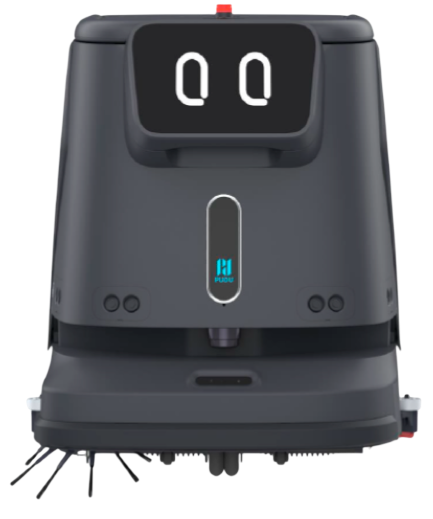
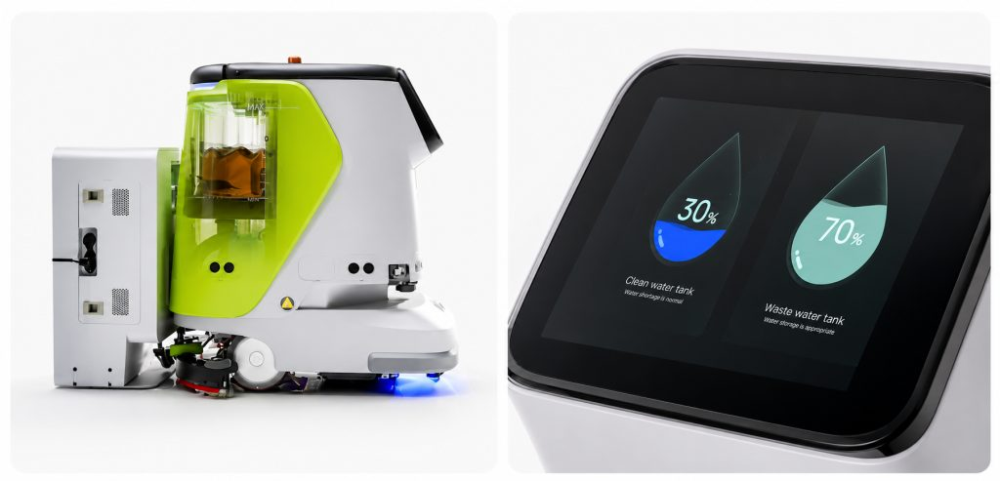

Робот-уборщик Pudu CC1
Pudu CC1 представляет собой автоматическую поломоечную машину, совмещающую четыре функции: мойку пола, подметание, вакуумную уборку, в том числе ковровых покрытий, и сухую протирку. Универсальный робот-уборщик Pudu предназначен для уборки помещений малой и средней площади, в том числе бизнес-центров, магазинов, отелей, кафе, клиник, учебных заведений и других объектов. Машина работает без оператора, строит маршрут по карте помещения, объезжает препятствия и самостоятельно возвращается на станцию для зарядки и пополнения воды. Производительность составляет от 700 до 1 000 м² в час.

Коротко о модели и цена
Новый блок: параметры и покупка| Производительность | 700-1 000 м²/ч, за заряд 3 500-5 000 м² мойки |
| Режимы | мойка, подметание, вакуумная уборка, сухая протирка |
| Автономность | мойка 5 ч, подметание 5 ч, ковры 4 ч, протирка 9 ч, зарядка менее 3 ч |
| Навигация | PUDU SLAM: лидар и визуальная локализация |
| Габариты и проход | 62,9 × 55,2 × 69,5 см, проход от 70 см, порог до 2 см |
| Для каких объектов | бизнес-центры, магазины, отели, кафе, клиники |
Три варианта поставки
Новый блок: комплектацииБазовая
С док-станцией
Полная
Нажмите на вариант, цена выше пересчитается. Состав комплекта определяется в коммерческом предложении.
Технические характеристики Pudu CC1
Блок: таблица характеристик| Модель | CCBC01 |
| Режимы уборки | мойка, подметание, вакуумная уборка, сухая протирка |
| Производительность | 700-1 000 м²/ч |
| Ширина уборки | до 50 см с боковой щеткой, 63 см у водосборного модуля |
| Баки для воды | чистая вода 15 л, загрязненная вода 15 л |
| Пылесборник | 2,5 л |
| Мощность всасывания | до 17 000 Па |
| Аккумулятор | 50 А·ч |
| Время работы | мойка 5 ч, подметание с вакуумной уборкой 5 ч, ковровые покрытия 4 ч, тихая протирка 9 ч |
| Время зарядки | менее 3 часов |
| Навигация | PUDU SLAM: лидар и визуальная SLAM-локализация |
| Скорость движения | 0,2-1,2 м/с |
| Уровень шума | менее 70 дБ |
| Габариты (Д × Ш × В) | 62,9 × 55,2 × 69,5 см |
| Вес | 75 кг |
| Минимальная ширина прохода | 70 см |
| Преодолеваемый порог | до 2 см |
| Максимальный уклон | 8 градусов |
| Экран | 10,1 дюйма |
| Связь | Wi-Fi, 4G, Bluetooth, мобильное приложение |

Возможности и преимущества
Блок: карточки-преимуществаЧетыре типа уборки поддерживаются одной машиной
Модули заменяются примерно за одну минуту, режим переключается одним нажатием на экране.
Автономная навигация
Сочетание лидара и визуальной SLAM позволяет работать в помещениях со сложной планировкой и потоком посетителей, мультисенсорная система обнаруживает и объезжает препятствия.
Автоматическая зарядка, долив и слив воды
При использовании док-станции робот-мойщик Pudu самостоятельно подъезжает к станции для обслуживания, заряжается, набирает чистую воду, сливает загрязненную и добавляет моющее средство. Подключение к водопроводу не требуется: применяется мобильные баки на 30 л чистой и 30 л загрязненной воды, объема баков хватает примерно на два полных цикла уборки.
Возобновление уборки с точки остановки
Если заряд заканчивается до завершения работы, машина запоминает прогресс и после зарядки продолжает уборку с того же места.
Уборка покрытий разного типа, в том числе
терраццо, мрамор, керамогранит, наливные полы, искусственный камень. При установке отдельного модуля становится доступна уборка ковровых покрытий с коротким ворсом.
Тихая работа
Уровень шума менее 70 дБ позволяет использовать робот-пылесос Pudu в присутствии посетителей.
Контроль через приложение
Доступны запуск и остановка, расписание уборки, уведомления о состоянии, а также отчеты по убранной площади, времени работы и расходу воды.
Где применяется
Блок: текстБизнес-центры и офисы, торговые залы, отели, рестораны и фуд-корты, банки, клиники, учебные заведения, залы ожидания и небольшие складские зоны. Модель рассчитана на объекты, где требуется ежедневная поддерживающая уборка при постоянном потоке людей, а тяжелая поломоечная техника избыточна.
Комплектация
Блок: текстВ базовую поставку входит сам робот, комплект щеток для мойки и подметания, водосборный скребок, аккумулятор и зарядное устройство. Отдельно поставляются зарядная станция, док-станция с автоматическим доливом и сливом воды, мобильный бак для воды и модуль для уборки ковровых покрытий. Состав комплекта определяется в коммерческом предложении.
Сравнение с другими моделями
Новый блок: сравнение| Параметр | Pudu CC1 | Keenon Cleanbot C40 | Pudu SH1 |
|---|---|---|---|
| Тип | автономный робот | автономный робот | ручная поломоечная машина |
| Производительность | 700-1 000 м²/ч | до 1 100 м²/ч | 1 100-1 600 м²/ч |
| Баки | 15 + 15 л | 16 + 14 л, мешок 8 л | 4 + 4 л |
| Время работы | 5 ч мойка, 9 ч протирка | 5 ч мойка, 12 ч подметание | 70-100 минут |
| Вес | 75 кг | 70 кг | 17 кг |
| Цена от | N NNN NNN ₽ | N NNN NNN ₽ | NNN NNN ₽ |
Дополнительно к роботу
Новый блок: допоборудование
Док-станция с автодоливом и сливом
зарядка, вода и моющее средство без людей

Мобильный бак 30 + 30 л
без подключения к водопроводу

Модуль для ковровых покрытий
вакуумная уборка ковров с коротким ворсом
Цена и условия поставки
Блок: расчётЦена и условия поставки
Купить Pudu CC1 можно в базовом исполнении либо с док-станцией и дополнительными модулями, от этого в том числе будет зависеть цена. Единый прайс-лист не публикуется, поскольку итоговая сумма формируется с учетом требований для конкретного объекта. Для получения расчета достаточно оставить заявку с указанием площади помещения и типа покрытия, после чего специалисты ATM АЛЬЯНС подготовят коммерческое предложение с комплектацией, стоимостью и сроком исполнения. При необходимости доступна услуга демонстрации работы машины на объекте заказчика.
Гарантия и сервис
Блок: гарантияНа поставляемое оборудование распространяется гарантия производителя. АТМ АЛЬЯНС выполняет пусконаладочные работы на объекте, включающие построение карты помещения, настройку маршрутов и расписания, а также обучение персонала работе с машиной и приложением. Плановое обслуживание и замену расходных материалов, таких как щетки, скребки, фильтры и аккумуляторы, выполняют специалисты сервисной службы АТМ АЛЬЯНС. Сервисная сеть компании охватывает 44 города России, запасные части хранятся на складе.
Где уже работает Pudu CC1
Новый блок: кейсыБизнес-центр, город
Ночная мойка N 000 м², тихая протирка днём
Лобби и коридоры
Круглосуточно с док-станцией. объект

Торговый зал
Партия для нескольких магазинов. число машин
Объекты и цифры результата заполняет клиент; страница «Проекты» сейчас отдаёт 404.
Что пишут заказчики Pudu CC1
Новый блок: отзывы и рейтингиОтзыв: как робот убирает, что с шумом, сколько времени освободилось у персонала.
Отзыв: пусконаладка, обучение, как работает док-станция ночью.
Отзыв: ковры, пороги, что пришлось доработать на объекте.
Для запуска собрать отзывы с Яндекс Карт и 2ГИС, тексты в прототипе условные.
Похожие модели
Новый блок: похожие модели